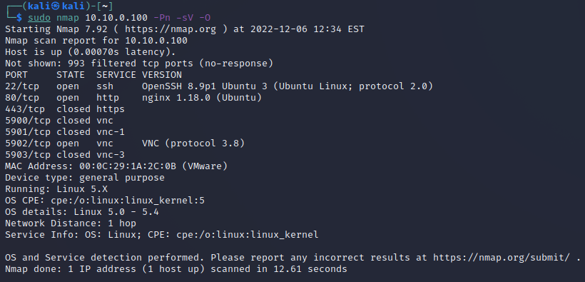

Exercises¶
Reconnaissance with Nmap¶
-
In the Kali VM, open a terminal window by clicking on the black
$_icon on the bar at the top. -
Enter the following command in the terminal to execute the Nmap scan:
sudo nmap 10.10.0.100 -Pn -sV -OEnter the kali password
kaliand press enter.Nmap identifies several open ports on the DER. The optional flags have the following meanings:
-Pn: Treat all hosts as online -- skip host discovery-sV: Probe open ports to determine service/version info-O: Enable OS detection
-
Review this list of common TCP ports that may exist on DER equipment and compare that to the results that you got from the nmap scan.
20, 21 - File Transfer Protocol (FTP) 22 - Secure Shell (SSH) 23 - Telnet 25 - Simple Mail Transfer Protocol (SMTP) 53 - Domain Name Server (DNS) 67, 68 - Dynamic Host Configuration Protocol (DHCP) 80 - HyperText Transfer Protocol (HTTP) 110 - Post Office Protocol (POP3) 161, 162 - Simple Network Management Protocol (SNMP) 389 - Lightweight Directory Access Protocol 443 - HTTP with Secure Sockets Layer (SSL) 502 - Modbus 3389 - Remote Desktop Protocol 5900-5903 - Virtual Network Computing
-
In the case of the DER simulator, we can see there is an open SSH port, HTTP website, and VNC server. We can also see that this device is running a Linux kernal, which would be helpful information for an adversary as they will be able to look up vulnerabilities for that operating system.
CAUTION: Generally, it is not a recommended practice to perform port scanning in a production environment due to the high likelihood of disrupting operations.